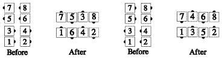

From general lines with the ends forming a tandem [At Advanced, this call is used only where at least one center in each line/wave is facing out.]: The ends do ½ Zoom, Arm Turn ¾, and Spread, to become the ends of the resulting formation. The centers facing out Cloverleaf to step in between the casting dancers. The centers facing in Extend, Hinge, and Extend to fill the vacant spot. However, if all the centers are facing in, they Pass In and Pass Thru, to finish facing out as the centers of the resulting lines.

From promenade: The caller must designate two couples, e.g., Heads Cast a Shadow. Everyone acts as though the formation were two-faced lines, with the designated couples as the leads. Thus, the outsides do a ½ Zoom with the designated outside acting as the lead), Arm Turn ¾, and Spread, while the designated centers Cloverleaf, and the other centers Hinge and Extend. Ends in parallel waves.
By vote of the Advanced Committee, this call is not to be done from columns.
Timing: 10